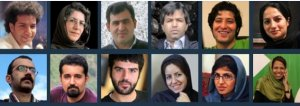
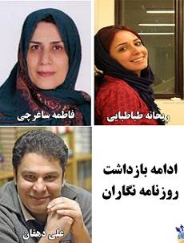
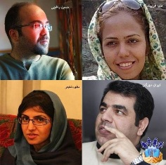

|
|
رعب و وحشت از قلم، روزنامه نگارانی که خود "خبر" شدند
جمعه13 بهمن 1391

تغییر برای برابری - موج بازداشت های رعب آور روزنامه نگاران همچنان ادامه دارد. معمولا با نزدیک شدن به انتخابات، فضای بسته سیاسی و مطبوعاتی کمی بازتر می شود اما این تاکتیک تغییر کرده و انگار نسخ گیری قبل از انتخابات و ایجاد رعب و وحشت دور اول این سناریو است که با تلاش برای اعتراف گیری های نمایشی همراه خواهد بود.
دور جدید بازداشت ها از 7 بهمن ماه با بازداشت میلاد فدائی اصل، از خبرگزاری ایلنا و سلیمان محمدی از روزنامه بهار آغاز شد و بعد هم خبر رسید که فاطمه ساغرچی، مدیر سابق کتابخانه مرکز تحقیقات استراتژیک، هفتم بهمن٬ ساعت هشت شب در منزل شخصی اش بازداشت شده است. فاطمه ساغرچی در هنگام دستگیری ادیتور سایت جماران بود.
8 بهمن 1391، نیروهای امنیتی جمهوری اسلامی ایران طی یک حملهٔ همزمان به دفاتر چهار روزنامه اصلاح طلب به نامهای شرق، اعتماد بهار، آرمان و هفته نامه آسمان، 10 نفر دیگر از روزنامه نگاران را بازداشت کردند. نسرین تخیری، جواد دلیری، ساسان آقایی، اکبر منتجبی، مطهره شفیعی، نرگس جودکی، پوریا عالمی، پژمان موسوی، امیلی امرایی بازداشت شدند.
صبا آذرپیک، همان شب در منزل خود دستگیر شد. از میان روزنامه نگاران بازداشت شده، تنها مطهره شفیعی، دبیر سرویس سیاسی روزنامه آرمان آزاد شد.
 
دوشنبه ۹ بهمن، دو نفر دیگر از روزنامه نگاران به نامهای کیوان مهرگان و حسین یاغچی توسط نیروهای امنیتی بازداشت شدند.
روز 11 بهمن، علی دهقان، روزنامهنگار و دبیر سرویس اقتصادی روزنامه بهار با حکم قضایی بازداشت و به زندان منتقل شد.
12 بهمن، ریحانه طباطبایی، روزنامه نگار، در منزل شخصی اش بازداشت شد. ریحانه طباطبایی روزنامه نگار سرویس سیاسی در روزنامه بهار است که پیش از این، به جرم تبلیغ علیه نظام، به شش ماه حبس تعزیری محکوم شده بود
گفته می شود که بسیاری دیگر از روزنامه نگاران احضاریه دریافت کرده اند.
منابع : کمیته گزارشگران حقوق بشر، گزارشگران بدون مرز